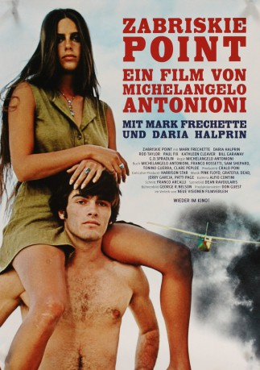

#6725 Zabriskie Point
 
 IMDB-Wertung: 7.1 / 10
IMDB-Wertung: 7.1 / 10  Tomatometer: 67
Tomatometer: 67  Metascore: 0
Metascore: 0 
Ein junges Paar steht im Mittelpunkt der scharfäugigen Betrachtung durch die Kamera des Meisters der Filmkunst. Sie ist eine Sekretärin, deren Pflichten sich auch mal bis in das Schlafzimmer ihres Chefs erstrecken können. Er ist ein ehemaliger Student, der am Tod eines Polizisten beteiligt sein könnte. Die beiden treffen sich; es entsteht eine Verbindung zwischen ihnen; sie spielen, lieben sich, bewegen sich weiter: Er in Richtung einer Tragödie, sie in Richtung einer offenen Zukunft. Und Antonioni bewegt sich zu einem explosiven Finale, in dieser mitreißenden Vision der Liebe in einem Klima der Gewalt.
Jahr: 1970
Dauer: 106 Minuten
FSK: 16
Land: USA Studio: MGMTonspuren:
Untertitel:
Auflösung: 720p (1280x720) Größe: 2140 MB
Genre: Drama
Regisseur: Michelangelo Antonioni
Drehbuch: Michelangelo Antonioni
Soundtrack:
Darsteller:
- Mark Frechette als Mark
- Daria Halprin als Daria
 Paul Fix als Cafe Owner
Paul Fix als Cafe Owner G.D. Spradlin als Lee's Associate
G.D. Spradlin als Lee's Associate- Kathleen Cleaver als Kathleen
 Rod Taylor als Lee Allen
Rod Taylor als Lee Allen Harrison Ford als Arrested Student , uncredited
Harrison Ford als Arrested Student , uncredited Philip Baker Hall als Diner Owner , uncredited
Philip Baker Hall als Diner Owner , uncredited Bill Hickman als Gun store owner / Clerk , uncredited
Bill Hickman als Gun store owner / Clerk , uncredited Kenner G. Kemp als Departing Plane Passenger , uncredited
Kenner G. Kemp als Departing Plane Passenger , uncredited- Wesley Lau als Company Executive , uncredited
- Cec Linder als White-Haired Executive , uncredited
- Tom Steele als Tom - Security Guard , uncredited
- Bill Garaway als Morty
- Michael L. Davis als Police Lieutenant on Loudspeaker , uncredited
- Lee Duncan als Highway Patrolman , uncredited
- Jim Goldrup als College Student , uncredited
- Norman Grabowski als Man in Deli , uncredited
- Peter Lake als Documentary Cameraman , uncredited
- Boyd 'Red' Morgan als Policeman , uncredited
- Bruce Neckels als Bill , uncredited
Datei: X:\1970\Zabriskie Point (1970, FSK16, 1280x720).mkv seit 09.08.2017
Festplatte: HD 1900-1970
 Es gibt insgesamt 24 Filme in der Gruppe '1970'
Es gibt insgesamt 24 Filme in der Gruppe '1970'